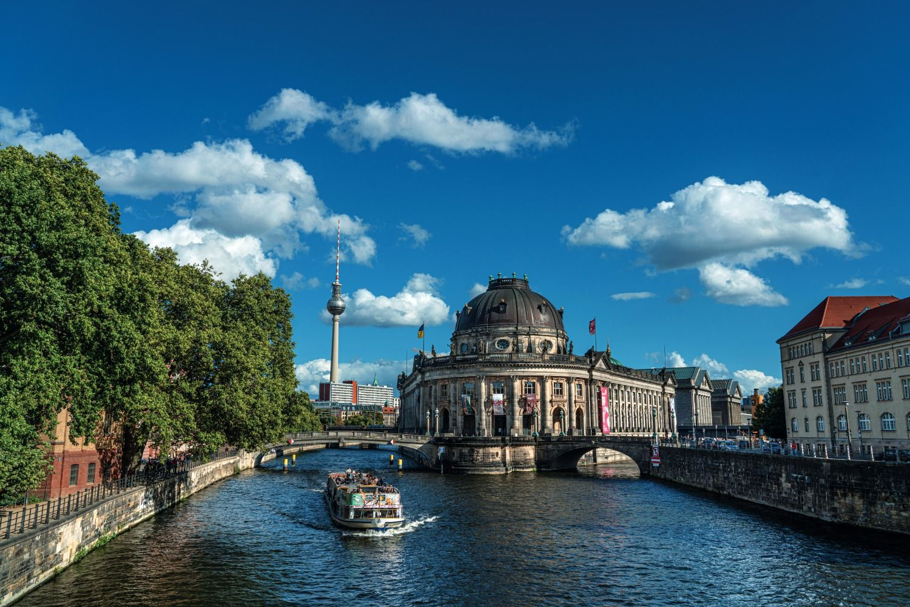
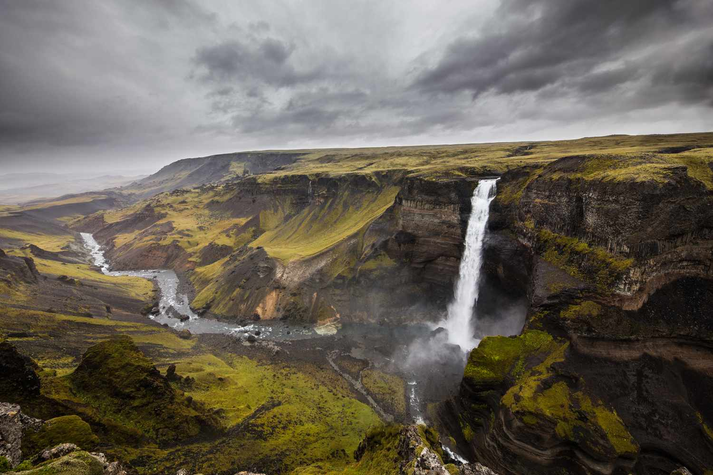
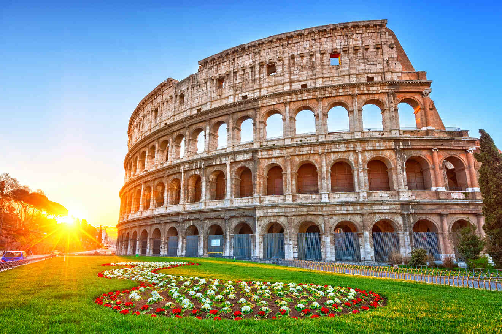
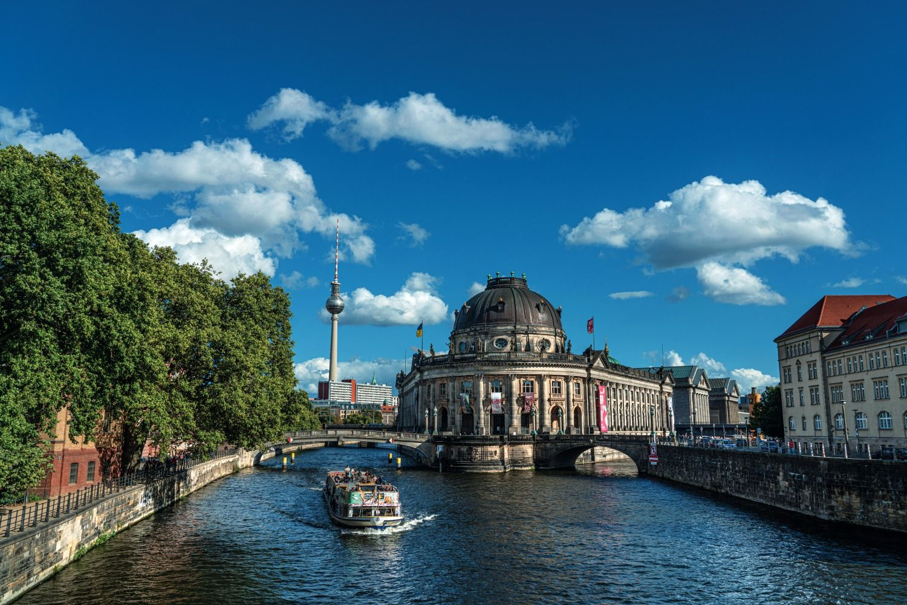
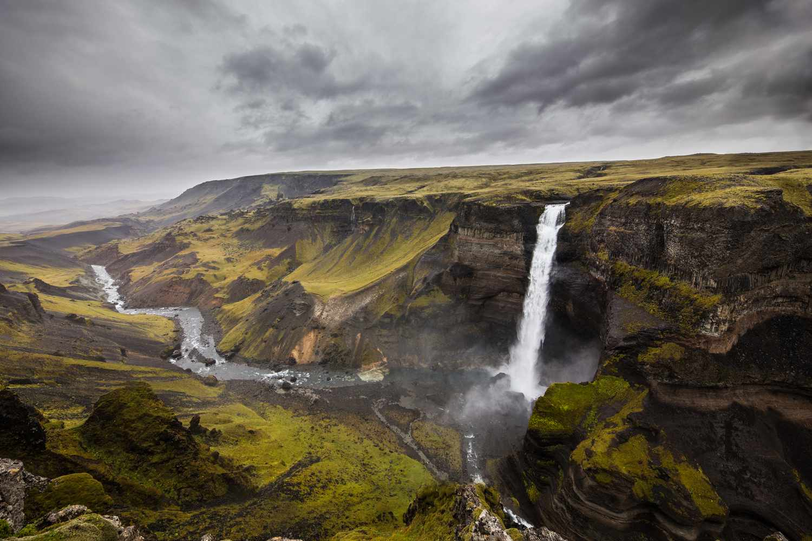
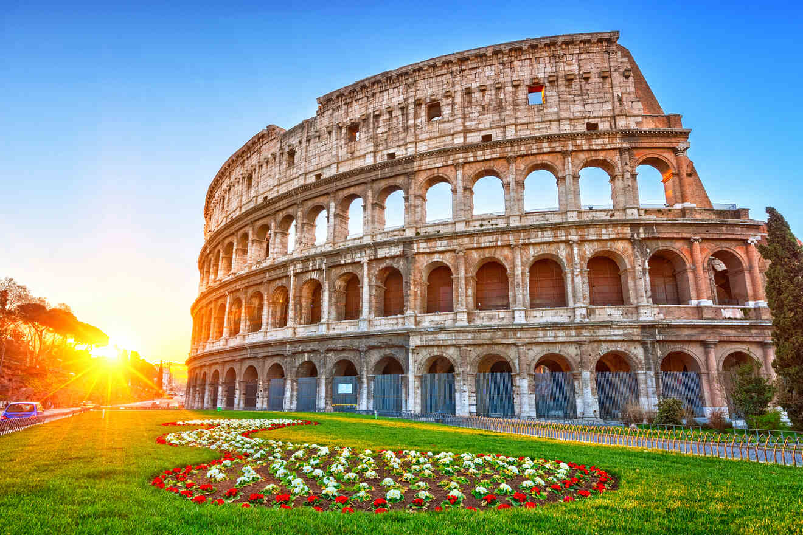

Japan is an island nation in East Asia, located in the Pacific Ocean. It is known for its rich cultural heritage, advanced technology, and stunning natural landscapes. From the bustling metropolis of Tokyo to the serene temples of Kyoto, Japan offers a blend of ancient traditions and modern innovation. The country is also famous for its cuisine, including sushi, ramen, and tempura, as well as its distinctive arts, such as tea ceremonies, calligraphy, and the performing arts of Noh and Kabuki.

Norway is a Scandinavian country known for its stunning natural beauty, including fjords, mountains, and northern lights. It has a rich history of Viking heritage and a strong tradition of seafaring. Norway is also known for its high standard of living, social welfare system, and outdoor activities such as skiing and hiking.

Germany is a central European country known for its history, culture, and economic strength. It is a leading nation in industry, technology, and innovation, with a rich cultural heritage that includes classical music, philosophy, and literature. The country is also famous for its contributions to the automotive industry, as well as its picturesque towns, castles, and diverse landscapes.


Iceland is a Nordic island nation known for its dramatic landscapes, including volcanoes, geysers, hot springs, and lava fields. It is one of the most sparsely populated countries in Europe, with a unique culture that blends Norse traditions with modern influences. Iceland is also famous for its geothermal energy and the aurora borealis, or northern lights.
IItaly is a European country with a rich history, known for its contributions to art, architecture, cuisine, and culture. Home to the Roman Empire and the Renaissance, Italy has left an indelible mark on Western civilization. The country is famous for its historic cities such as Rome, Florence, and Venice, as well as its beautiful countryside and Mediterranean coastline.